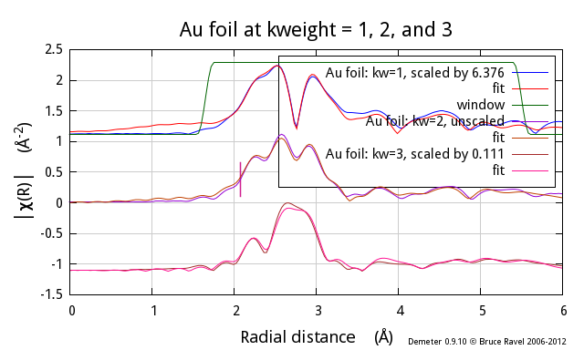

Other plotting features
Zooming and cursor position
Zooming on a region of a plot is done using Gnuplot's own
capabilities. In the plot window, a zoom is initiated by a right
click. The mouse is then dragged to cover a rectangular area on the
plot. Right-clicking a second time will cause the plot to be
redisplayed on the zoomed region.
Gnuplot displays the position of the cursor in the bottom part of the
plot window. This is continuously updated as the mouse moves over the
plot window.
Special plots for the current group
-
Quad plot
-
The quad plot is the default plot that gets made when data are first
imported. Using the current set of processing parameters, the data
are displayed in energy, k, R, and back-transform k all in the same
plot window. This plot can also be made by right-clicking on
the q button.

-
Normalized data and derivative
-
This plot type shows the normalized μ(E) spectrum along with its
derivative. The derivative spectrum is scaled by an amount that makes
it display nicely along with the normalized data.

-
Data + I0 + signal
-
I₀ can be plotted
along with μ(E) and the signal as shown below.
The I₀ and signal channel is among the data saved in
a project file.
This example shows μ(E) of Au chloride along with the signal and
I₀ channels.This plot can also be made by right-clicking on
the E button. (The norm+deriv
plot can be configured for right-click use with
the ♦Artemis → right_single_e
configuration parameter.)
 of Au chloride along with the signal and I0 channels.")
-
k123 plot
-
A k123 plot is a way of visualizing the effect of k-weighting on the
χ(k) spectrum. The k¹-weighted spectrum is scaled up to be
about the same size as the k²-weighted spectrum. Similarly, the
k³-weighted spectrum is scaled down.
This plot can also be made by right-clicking on
the k button.

-
R123 plot
-
A R123 plot is a way of visualizing the effect of k-weighting on the
χ(R) spectrum. The Fourier transform is made with k-weightings of
1, 2, and, 3. The FT of the k¹-weighted spectrum is scaled up to be
about the same size as the FT or the k²-weighted spectrum. Similarly, the
FT of the k³-weighted spectrum is scaled down. The current
setting in the
R tab
is used to make this plot. For this figure, the magnitude setting was selected.
This plot can also be made by right-clicking on
the R button.

Special plots for the marked groups
The “Marked groups” submenu offers two
special kinds of plots relating to the set of groups in the group list
that have been marked.
-
Bi-Quad plot
-
This special plot is like the quad plot described above, but is used
to compare two marked groups. To make this plot you must have two
– and only two – groups selected from the group list.
It is helpful

-
Plot with E0 at 0
-
This special plot is used to visualize μ(E) spectra measured at
different edges. Each spectrum, Cu and Fe in this example, is shifted
so that its point of E₀ is displayed at 0 on the energy axis.

-
Plot I0 of marked groups
-
This plot allows examination of the I₀ signals of a set of marked groups.
This plot can also be made by right-clicking on
the E button. (The other two
special marked groups plots can be configured for right-click use with
the ♦Artemis → right_marked_e
configuration parameter.)

-
Plot scaled by edge step
-
The marked groups can be plotted as normalized μ(E), but scaled by
the size of the edge step. Without flattening, this is identical to
plotting the μ(E) data with the pre-edge line subtracted.
Otherwise, it is different in that the post-edge region will be
flattened and will oscillate around the level of the edge step size.

Special plots for merged groups
When data are merged, the standard deviation spectrum is also computed
and saved in
project files.
The merged data can be plotted along with its standard deviation
as shown in the merge section
in a couple of interesting ways.
-
Merge + standard deviation
-
In this plot, the merged data are displayed along with the standard
deviation. The standard deviation has been added to and subtracted
from the merged data. This is the plot that is displayed by default
when a merge is made. This behavior is controled by the
♦Athena → merge_plot
configuration parameter.

-
Merge + variance
-
In this plot, the standard deviation spectrum is plotted directly. It
is scaled to plot nicely with the merged data. The point of this plot
is to see how the variability in the data included in the merge
is distributed in energy.

Special plotting targets
The Plot menu provides a few more ways to control how your data are
displayed. The “Save last plot as” submenu
allows you to send the most recent plot to a PNG or PDF file. You
will be prompted for a filename, then the most recent plot will be
written to that file in the format specified. Currently, only PNG and
PDF are supported. Saving to a file does not work for quad
plots – you'll have to rely on a screen-capture tool
for that.
Finally, you have the option of directing the on-screen plot to one of
four terminals. The selected terminal, number 1 by default, is updated as
new plots are made. When you switch to a new terminal, other active
terminals will become unchanging. This means you can save a
particular plot on screen while continuing to make new plots.
 Consider other file types. SVG and EPS should work.
Gnuplot's GIF and JPG terminals are not sufficiently featureful
to replicate all the details of ATHENA's plots.
Consider other file types. SVG and EPS should work.
Gnuplot's GIF and JPG terminals are not sufficiently featureful
to replicate all the details of ATHENA's plots.
Consider making the number of terminals a configuration parameter.
Phase corrected plots
When the “phase correction” button is
clicked on, the Fourier transform for that data group will be made by
subtracting the central atom phase shift. This is an incomplete phase
correction – in ATHENA we know the central atom but do not
necessarily have any knowledge about the scattering atom.
Note that, when making a phase corrected plot, the window function in R
is not corrected in any way, thus the window will not line up with the
central atom phase corrected χ(R).
Also note that the phase correction propagates through to χ(q).
While the window function will display sensibly with the central atom
phase corrected χ(q), a “kq” plot will
be somewhat less insightful because phase correction is not performed
on the original χ(k) data.
![[Athena logo]](../../images/pallas_athene_thumb.jpg)